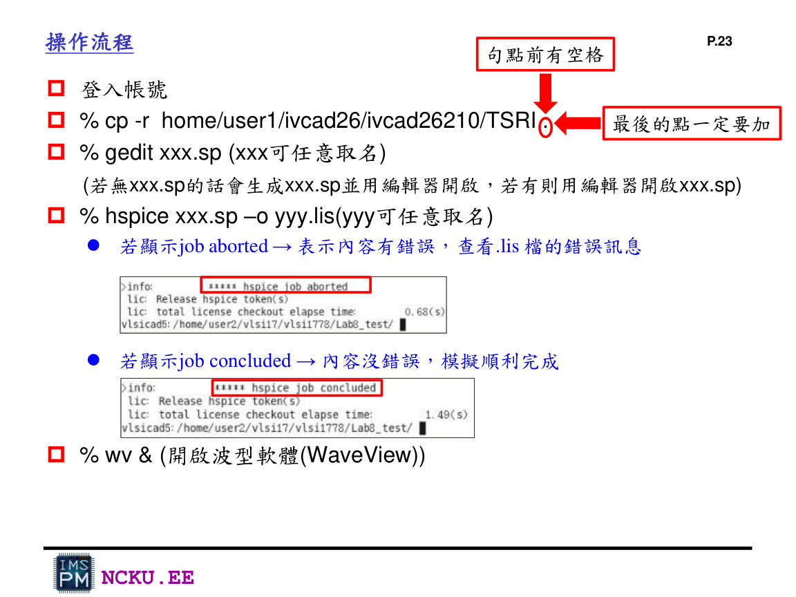
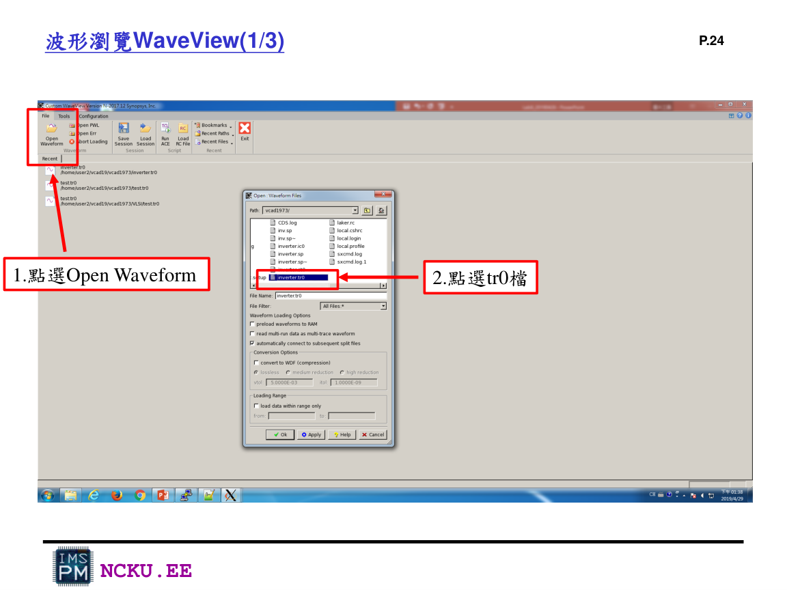

工具使用說明
Lab8 主要用 gedit、HSPICE、WaveView。Virtuoso 是後續 schematic/layout 會用到的工具，這裡放在延伸說明。
gedit
用來建立與編輯 circuit.spi、testbench.sp。
gedit circuit.spi &
gedit testbench.sp &HSPICE
用來讀取 SPICE netlist、製程模型與測試訊號，輸出 .lis 與 .tr0。
hspice testbench.sp -o Lab8_result.lisWaveView
用來開啟 transient waveform 檔案，例如 Lab8_result.tr0。
wv &工具操作流程圖片

終端機流程：複製 TSRI、建立檔案、跑 HSPICE、開啟 WaveView。

WaveView：Open Waveform 後選擇 .tr0 檔。
常見指令表
| 目的 | 指令 | 說明 |
|---|---|---|
| 複製 TSRI | cp -r home/user1/ivcad26/ivcad26210/TSRI . | 取得 model/library 資料 |
| 編輯檔案 | gedit xxx.sp & | 建立或開啟 SPICE 檔 |
| 執行模擬 | hspice testbench.sp -o result.lis | 成功會顯示 job concluded |
| 開啟波形 | wv & | 用 WaveView 讀 .tr0 |